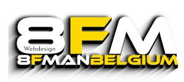
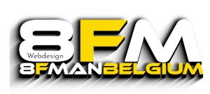
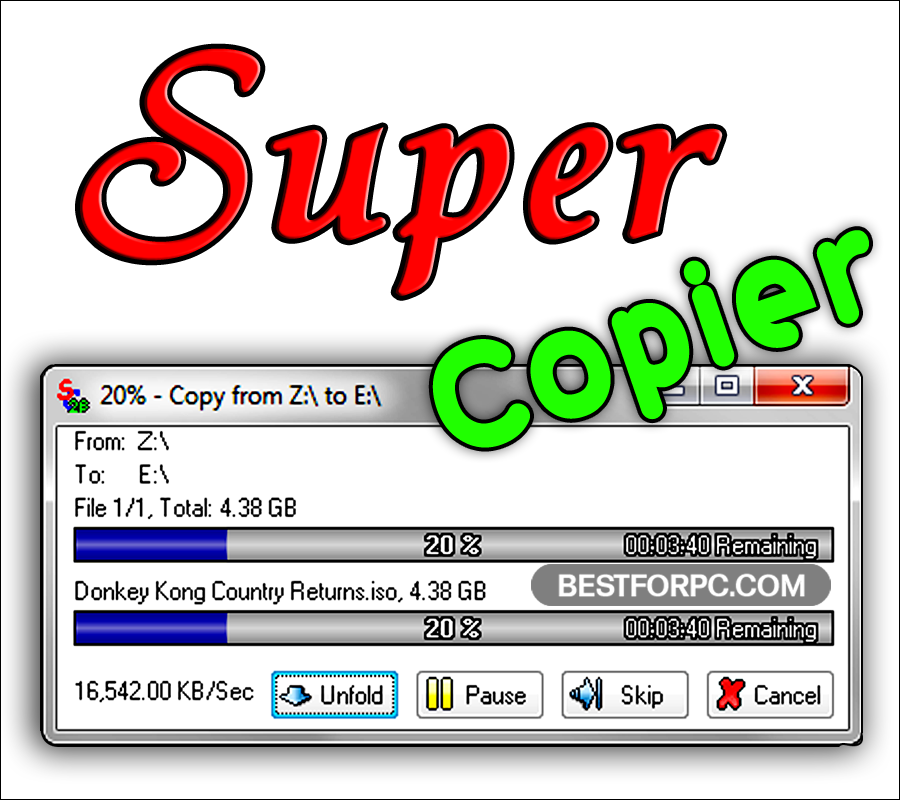

Hier vind u software voor windows 11 of 10, is allemaal gratis en een voor een getest door mij persoonlijk
Welkom op de download Page
Software Dowloads windows 11 Hardware niet Compactible
Software Dowloads Pc Manager voor Belgie en nederland
Software Dowloads DeBload windows 10 of 11 met Crapfixer
Software Dowloads Snappy Driver Install
Software Dowloads Super Copier Install

Software Dowloads AB Downloader Install
Software Dowloads Windows 10 updater
Software Dowloads qBittorent Install
Software Dowloads Verberg u IP Adres
0.0.0.0
locatie